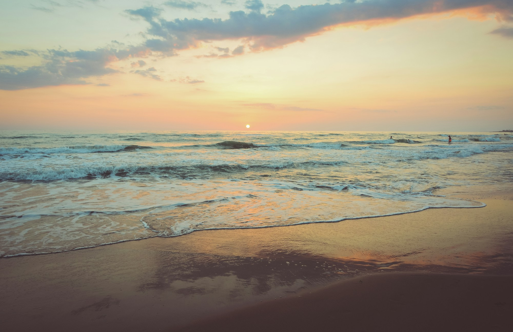

Independent landscape photography
Coast, land
and open water.
A sample portfolio for a photographer documenting natural places.
View selected work
Selected work
Three studies of the natural landscape.
Select a series to view the photograph.
About the sample studio
Photography with
a sense of place.
Shore is a fictional independent photography studio. This template gives photographs room to lead, with straightforward project descriptions and a clear way to get in touch.
Use this space to introduce the person behind the camera, the places they work, and the kinds of commissions they accept.
How a commission works
- Share the location, intended use and preferred dates.
- Agree on the scope, image selection and delivery format.
- Review the photographs and receive the final files.
This is an illustrative workflow, not an offered service.
Discuss a
photography project.
Try the sample enquiry form. It creates a preview of your enquiry here. Nothing is sent or saved.